Visualizing Nonlinear Narratives with Story Curves
Published in IEEE transactions on visualization and computer graphics (InfoVis'17)
A nonlinear narrative is a storytelling device that portrays events of a story out of chronological order, e.g., in reverse order or going back and forth between past and future events. Story curves visualize the nonlinear
narrative of a movie by showing the order in which events are told in the movie and comparing them to their actual chronological order, resulting in possibly meandering visual patterns in the curve. We also developed Story Explorer,
an interactive tool that visualizes a story curve together with complementary information such as characters and settings. Story Explorer further provides a script curation interface that allows users to specify the chronological order of
events in movies. We used Story Explorer to analyze 10 popular nonlinear movies and describe the spectrum of narrative patterns that we discovered, including some novel patterns not previously described in the literature.
@article {kim2018story,
title={Visualizing Nonlinear Narratives with Story Curves},
author={Kim, Nam Wook and Bach, Benjamin and Im, Hyejin and Schriber, Sasha and Gross, Markus and and Pfister, Hanspeter},
volume={24},
number={1},
journal={IEEE transactions on visualization and computer graphics},
year={2018},
month={Jan},
doi={10.1109/TVCG.2017.2744118}
}
Nam Wook Kim
Ph.D. student
@ Harvard University
Benjamin Bach
Assistant Professor
@ University of Edinburgh
Hyejin Im
Student
@ Tufts University
Sasha Schriber
Principal Digital Artist
@ Disney Research Zürich
Markus Gross
Director
@ Disney Research Zürich
Hanspeter Pfister
Professor
@ Harvard University
Narrative Theory
Nonlinear Narrative Telling a Story out of Chronological Order
Story vs Narrative
While the word story is often used interchangeably with narrative, they have different definitions in the narrative theory[Ref].
Story is the content of a narrative (what is told), consisting of a sequence of events (actions, happenings) in chronological order and existents (characters and settings).
Narrative is an expression (how it is told), concerning about how the content is presented to readers (narrative voices, styles, plots).
Strictly speaking, we only see the story through narrative and thus it is the narrative that determines our perception of story.
Nonlinear Narrative
A nonlinear narrative is a storytelling technique describing events in a
story out of chronological order, such that the relationship among the
events does not follow the original causality sequence. For example,
a narrative can withhold information to maintain a sense of mystery,
to keep tension high, and to keep the audience interested. Eventually,
the narrative can flash back to the beginning of the story, releasing
the tension. Such nonlinear narrative techniques are widely used in
various types of storytelling genres, including literature, theater, movies,
graphic novels, as well as hypertexts and other computer-mediated
genres such as video games.
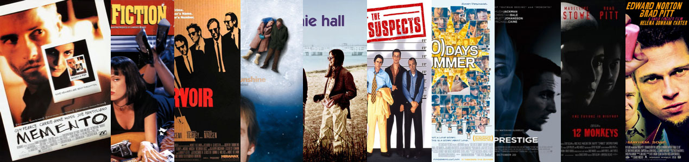
Nonlinear Narrative Patterns
According to Gérard Genette's typology [Ref], there are seven categories
of the relationships between the temporal order of the events that are
being told (story order) and the pseudo-temporal order of the narrative
(narrative order).
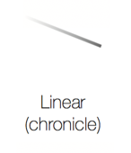
Events are narrated in chronological order, i.e., there
is temporal agreement in the order of the events between story and
narrative. A unique order may not be specified as some events can
happen simultaneously; they may be arranged in any order, relative to
each other. Most movies belong to this category (e.g., natural disaster
or folklore movies).
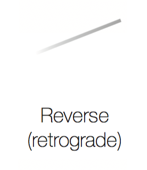
Events are narrated in reverse chronological order. For
example, colored scenes in Christopher Nolan’s movie Memento are
portrayed backward, while black-and-white scenes are in the original
order. Another historical example is Iliad, an ancient Greek epic poem,
that begins in the middle of the Trojan War.
Events are narrated that took place earlier than what
is being narrated. It is more commonly referred as flashbacks that
are used to recount events that occurred in the past to fill in crucial
backstory. For instance, flashbacks are a major part of the TV show
Lost, portraying what happened in the life of the main characters before
they were stranded on the island.
Events are narrated that take place later than what is
being narrated. It is more commonly referred as flashforwards that are
used to allude to events projected to occur in the future. For example,
the film Arrival extensively uses prolepsis to show events that occur in
the future
Events from a period are interleaved with those from another
period as they are narrated in order, e.g., a narrative alternating
between the past and present. The events that are paired must be semantically
related, thus resulting in a temporal coordination similar to
Syllepsis discussed later. For example, a past event is retrospective of
a present event, and in the movie Memento chronological scenes are
interleaved with reverse scenes.
Events are grouped based on some criteria (e.g., spatial,
temporal, thematic kinship). Thematic groupings are often used in the
classical episodic novel where multiple stories are inserted and justified
by analogy or contrast. Similar groupings are also found in films like
Pulp Fiction and Love Actually that use multiple plotlines.
Achrony is the last category in which events are randomly ordered; thus the relationship between
the order in which events are narrated and the order in which
they occur is difficult or impossible to establish, possibly due to lack of
temporal information available from the narrative.
Others have gone on to further extend this taxonomy to address the
temporal irony that prevails in postmodern narratives such as parallel timelines, time forks
(e.g., Inception) and time loops (e.g., Interstellar)[Ref]
Story Curves
Visualizing and Communicating Nonlinear Narratives
A story curve provides a succinct visual summary of the order of scenes (events) in the nonlinear narrative of a movie.
The events are visualized as points in a 2-dimensional plot according to their order in the narrative (horizontally, left-to-right) and their chronological order in the story (vertically, top-down). As users rearrange scenes
into their chronological order, nonlinear narrative patterns become evident through the meandering shape of the story curve that connects
scenes in both narrative and story order. A similar visualization has been used by the New York Times Ref to visualize the narration in movie trailers.
Our story curves are the first scientific investigation and
systematic exploration of this visualization technique. In addition, we encode additional story information such as characters, places,
and periods of the day. Characters are represented using different colored curves, which communicate the number of characters in a
scene through the thickness of the curve segment. Places are encoded
as bands surrounding character curves, while day times are represented
using vertical backdrops in the background.
: A schematic diagram showing how a story curve is constructed from a sequence of events in story and narrative order.
We created story curves for 10 popular nonlinear
narrative movies: Memento, Pulp Fiction, Eternal Sunshine of the
Spotless Mind, The Usual Suspects, Reservoir Dogs, Annie Hall, 500
Days of Summer, 12 Monkeys, Fight Club, and Prestige. We gathered
the movie scripts from a public database Refand manually restored the
story order of the scenes in each movie using Story Explorer.
Pulp Fiction
Thriller, Crime | October 1994 | Directed by Quentin Tarantino | Nonlinearity 0.63 |iMDB|
Show Patterns
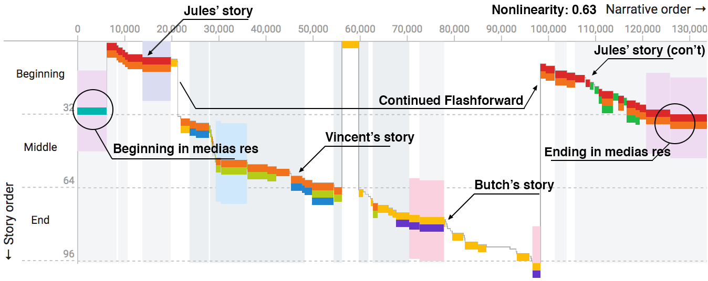
Reservoir Dogs
Crime, Thriller | June 1992 | Directed by Quentin Tarantino | Nonlinearity 0.92 |iMDB|
Show Patterns
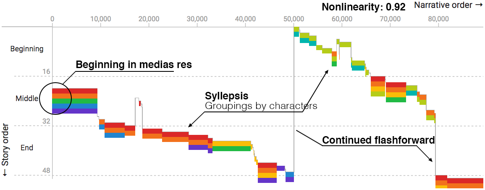
Eternal Sunshine of the Spotless Mind
Science Fiction, Drama, Romance | March 2004 | Directed by Michel Gondry | Nonlinearity 0.56 |iMDB|
Show Patterns
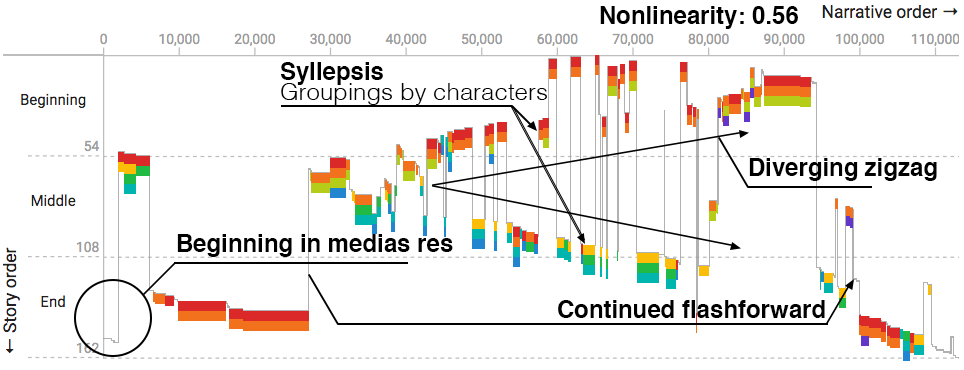
The Usual Suspects
Drama, Crime, Thriller | March 1995 | Directed by Bryan Singer | Nonlinearity 0.55 |iMDB|
Show Patterns
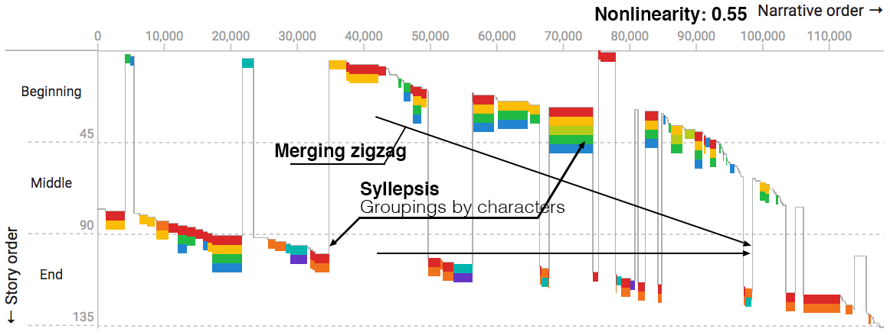
12 Monkeys
Science Fiction, Thriller, Mystery | December 1995 | Directed by Terry Gilliam | Nonlinearity 0.52 |iMDB|
Show Patterns
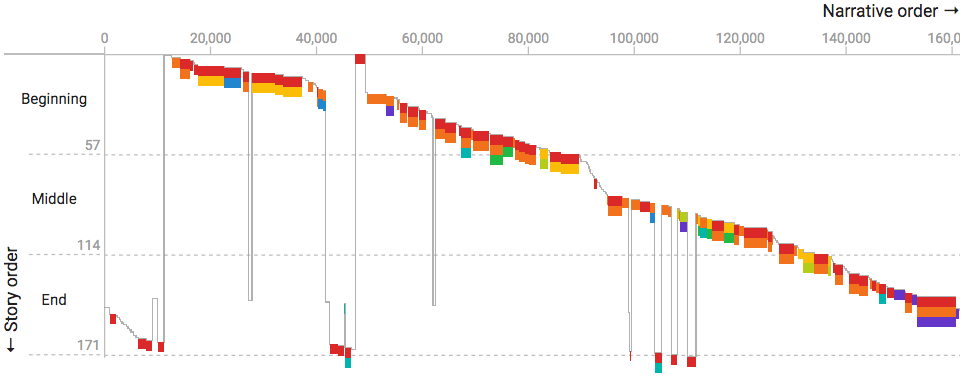
Fight Club
Drama | October 1999 | Directed by David Fincher | Nonlinearity 0.03 |iMDB|
Show Patterns
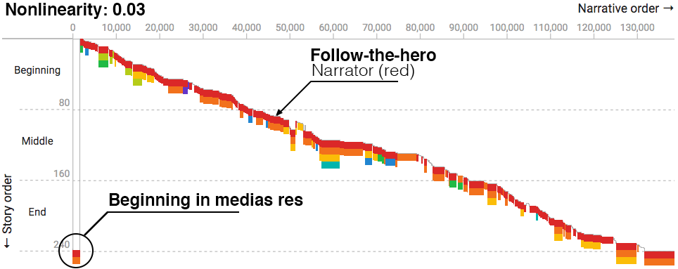
Memento
Mystery, Thriller | October 2000 | Directed by Christopher Nolan | Nonlinearity 0.81 |iMDB|
Show Patterns
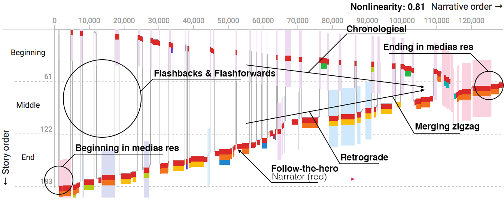
500 Days of Summer
Comedy, Drama, Romance | July 2009 | Directed by Marc Webb | Nonlinearity 0.31 |iMDB|
Show Patterns
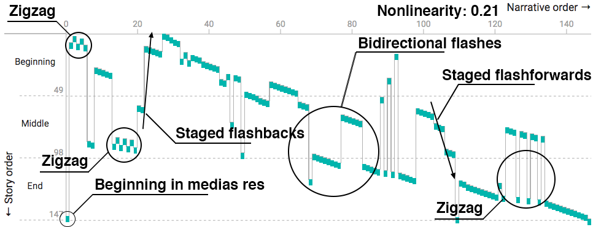
Prestige
Drama, Mystery, Thriller | October 2006 | Directed by Christopher Nolan | Nonlinearity 0.39 |iMDB|
Show Patterns
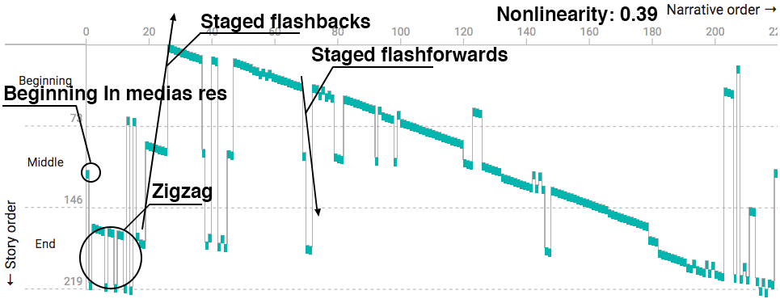
Annie Hall
Comedy, Drama, Romance | April 1977 | Directed by Woody Allen | Nonlinearity 0.31 |iMDB|
Show Patterns
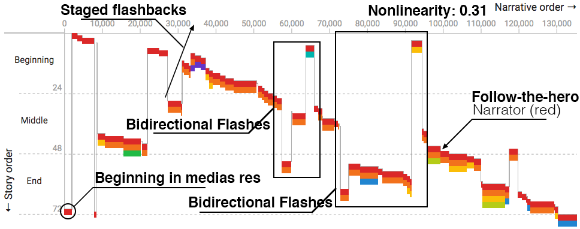
Story Explorer
Exploring Nonlinear Narratives in Movies using Story Curves
Story Explorer processes a movie script, extracts story elements
(scenes, characters, settings), and visualizes the narrative of the movie
alongside the script text. It supports the curation of the chronological
order of scenes and enables close reading of the script in both story and
narrative order.